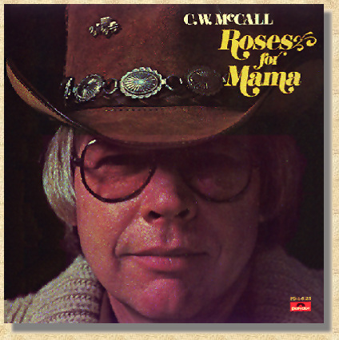

|
 Roses For Mama Side One Roses For Mama The Only Light Livin' Within My Means Watch The Wildwood Flowers Take My Duds To The Junkman Side Two The Battle Of New Orleans I Don't Know (& I Don't Care) The Gallopin' Goose Night Hawk Old Glory |
|
Side 1
Roses For Mama, 3:24 Chappell Music ASCAP (Johnny Wilson, Gene Dobbins, Wayne Sharpe) The Only Light, 2:30 Smog City Music/ABC Dunhil Music, Inc. BMI (Walt Meskell, Tim Martin) Livin' Within My Means, 2:59 McCall Music BMI (Ron Agnew) Watch The Wildwood Flowers, 2:50 McCall Music BMI (Ron Agnew) Take My Duds To The Junkman, 2:00 McCall Music BMI (Ron Agnew) Side 2 The Battle Of New Orleans, 2:50 Warden Music Co. Inc. BMI (Jimmy Driftwood) I Don't Know (& I Don't Care), 2:50 American Gramaphone SESAC (Chip Davis, Bill Fries) The Gallopin' Goose, 3:20 American Gramaphone SESAC (Chip Davis, Bill Fries) Night Hawk, 2:45 Chappell Music ASCAP (Tom McKeaon, Ron Peterson) Old Glory, 3:47 American Gramaphone SESAC (Chip Davis, Bill Fries) Produced by Don Sears, Chip Davis Arranged by Chip Davis Engineered by Don Sears, John Boyd, Ron Ubel, Jim Wheeler Recorded & Mastered at Sound Recorders, Inc., Omaha, Nebraska and Kansas City, Missouri Album Design by Bill Fries, Don Sears Photography by John Kircher Art Direction and Production by Dudycha, Schirck, & Assoc., Inc. RHYTHM: Drums, Percussian: Chip Davis, Keyboards: Jackson Berkey, Bass: Eric Hansen, Electric Guitar, 6 String: Ron Agnew, Ron Cooley, Walt Meskell / Twelve String: Ron Cooley / Banjo, Dobro: Walt Meskell, Harmonica: Eric Hansen / Six String On Night hawk: Mark Gorat, Jack Moss / Strings: Dorothy Brown, Hugh Brown, Miriam Dufflemeyer, Lucinda Gladics, James Hammond, Joe Landes, Beth McCollum,, Merton Shatzkin, Alex Sokol / Vocals: Ron Agnew, Milt Bailey, Chip Davis, Ruth Horn, Gary Morris, Sarah Westphalen / Special thanks to our chief engineer, Grant Schainost (c) (P) 1977 POLYDOR Incorporated Manufactured and Distributed by Polydor Incorporated, A Polygram Company 810 Seventh Avenue, New York, N.Y. 10019 Distributed by Phonodisc Incorporated Printed in U.S. A. |

This Web page is hosted by: Mark L. Evans
Written and maintained by: Miles A. Lumbard
Send Comments to:Miles A. Lumbard